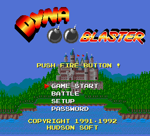
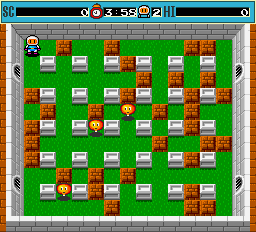

名稱：炸彈人／炸彈超人／轟炸超人 (Dyna Blaster／Bomberman，英文版)
簡介：Hudson 1990年出品的動作遊戲，1992年移植至DOS。2002年移植至Windows，由Konami
收錄在「炸彈人收藏版（BomberMan Collection）」光碟中 [待補]。


備註：本版為DOS版
保護：磁片版為磁片，光碟版為光碟SecuROM 4.84，磁片版破解碼：
DYNA.EXE
74 2A 80 3E
90 90 -- --
E4 37 FF 75
-- -- -- EB